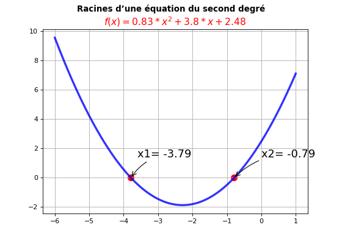
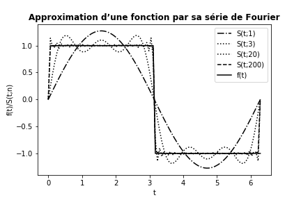

TD N°3 : Bibliothèques numpy et matplotlib
Mercredi, 5 décembre 2018
Table des matières
Exercise 1: Tracer une fonction
Exercise 2: Tracer deux fonctions
Exercise 3: Racines d’une équation du second degré
Exercise 4: Approximer une fonction par une somme de sinus
Exercise 5: Fonctions spéciales (intégrales de Fresnel et spirale de Cornu)
Exercise 1: Tracer une fonction
Ecrivez un programme qui trace la fonction \( g(y) = e^{-y} sin(4y) \) pour \( y \in [0, 4] \) en utilisant une ligne continue rouge. Utilisez 500 intervalles pour évaluer les points dans [0,4]. Stockez toutes les coordonnées et les valeurs dans des tableaux. Placez le texte des graduations sur les axes et utilisez le titre "Onde sinusoïdale atténuée".
Exercise 2: Tracer deux fonctions
Comme Exercice 1, mais ajouter une courbe en pointillé noir pour la fonction \( h(y) = e^{-\frac{3}{2}y} sin(4y) \). Inclure une légende pour chaque courbe (avec les noms \( g \) et \( h \)).
Exercise 3: Racines d’une équation du second degré
Dans l'"application de l'exercice 4 dans TD N°2, nous avons montré la représentation graphique d'une équation du second degré \( f(x)=0.83x^2+3.8x+2.48 \) ainsi que ses racines réelles:

Reproduire ce graphique en utilisant la fonction
EqSecondDegree(a,b,c) du script Python racines.py pour déterminer les valeurs des racines x1 et x2 de l’équation \( f(x) \).
Exercise 4: Approximer une fonction par une somme de sinus
Nous considérons la fonction constante par morceaux: $$ \begin{equation} f(t) = \left\lbrace \begin{array}{ll} 1, & 0 < t < T/2,\\ 0, & t = T/2,\\ -1, & T/2 < t \le T \end{array}\right. \label{_auto1} \end{equation} $$ On peut approcher f(t) par la somme: $$ \begin{equation} S(t;n) = {4\over\pi}\sum_{i=1}^n {1\over 2i-1} \sin\left( {2(2i-1)\pi t\over T}\right) \label{_auto2} \end{equation} $$ On peut montrer que \( S(t;n)\rightarrow f(t) \) quand \( n\rightarrow\infty \)
a)
Ecrivez une fonction Python S(t, n, T) pour renvoyer la valeur de \( S(t; n) \).
b)
Ecrivez une fonction Python f(t, T) pour calculer \( f(t) \).
c)
Créer un tableau t à l'aide de la fonction linspace, du module numpy, pour 100 valeurs t uniformément espacés dans [0, T]. On prendra \( T = 2 \pi \).
d)
Remplir une liste F par les valeurs de f(ti,T) avec \( ti \in t \). Transformer la liste F en un tableau (nous voulons avoir un tableau pour la fonction \( f(t) \) avec \( t \in [0, T] \) et \( T = 2\pi \)).
e) Tracer \( S(t; 1) \), \( S(t; 3) \), \( S(t; 20) \), \( S(t; 200) \) et la fonction exacte \( f(t) \) dans le même graphique. Le résultat devrait être similaire au graphique ci-dessous.

f)
Quelle est la relation entre la qualité de l'approximation et le choix de la valeur de n?
Exercise 5: Fonctions spéciales (intégrales de Fresnel et spirale de Cornu)
Les intégrales de Fresnel ont été introduites par le physicien français Augustin Fresnel (1788-1827) lors de ses travaux sur les interférences lumineuses (voici un article intéressant à lire: Fresnel, des Mathématiques en Lumière).
Ces intégrales doivent être calculées numériquement à partir des développements en série des intégrales: $$\int_{0}^{x} e^{-i\frac{\pi t^{2}}{2}} dt = \int_{0}^{x} cos(t^2) dt -i \int_{0}^{x} sin(t^2) dt= C(x) -i S(x)$$
Les fonctions de Fresnel sont des fonctions spéciales, définies par:
Pour \( x \geq \sqrt{\frac{8}{\pi}} \) $$ \begin{equation*} \begin{aligned} C(x) &= \frac{1}{2} + \cos\left(\frac{\pi x^{2}}{2}\right) gg1 + \sin\left(\frac{\pi x^{2}}{2}\right) ff1\\ S(x) &= \frac{1}{2} - \cos\left(\frac{\pi x^{2}}{2}\right) ff1 + \sin\left(\frac{\pi x^{2}}{2}\right) gg1 \end{aligned} \end{equation*} $$ et pour \( 0 \leq x < \sqrt{\frac{8}{\pi}} \) $$ \begin{equation*} \begin{aligned} C(x) &= \cos\left(\frac{\pi x^{2}}{2}\right) gg2 + \sin\left(\frac{\pi x^{2}}{2}\right) ff2 \\ S(x) &= - \cos\left(\frac{\pi x^{2}}{2}\right) ff2 + \sin\left(\frac{\pi x^{2}}{2}\right) gg2 \end{aligned} \end{equation*} $$ Où: $$ \begin{equation*} \begin{aligned} ff1 = \sum\limits_{n=0}^{11} \frac{d_{n}}{x^{2n+1}}\left(\frac{8}{\pi}\right)^{n+1/2} & gg1 = \sum\limits_{n=0}^{11} \frac{c_{n}}{x^{2n+1}}\left(\frac{8}{\pi}\right)^{n+1/2}\\ ff2 = \sum\limits_{n=0}^{11} b_{n}x^{2n+1}\left(\frac{\pi}{8}\right)^{n+1/2} & gg2 = \sum\limits_{n=0}^{11} a_{n}x^{2n+1}\left(\frac{\pi}{8}\right)^{n+1/2} \end{aligned} \end{equation*} $$ et \( a_n \), \( b_n \), \( c_n \) et \( d_n \) sont des coefficients tabulés (*J.Boersma Math Computation 14,380(1960)*) et donnés dans un fichier coef.dat:
#--------------------------------------------------
# an bn cn dn
#--------------------------------------------------
+1.595769140 -0.000000033 -0.000000000 +0.199471140
-0.000001702 +4.255387524 -0.024933975 +0.000000023
-6.808568854 -0.000092810 +0.000003936 -0.009351341
-0.000576361 -7.780020400 +0.005770956 +0.000023006
+6.920691902 -0.009520895 +0.000689892 +0.004851466
-0.016898657 +5.075161298 -0.009497136 +0.001903218
-3.050485660 -0.138341947 +0.011948809 -0.017122914
-0.075752419 -1.363729124 -0.006748873 +0.029064067
+0.850663781 -0.403349276 +0.000246420 -0.027928955
-0.025639041 +0.702222016 +0.002102967 +0.016497308
-0.150230960 -0.216195929 -0.001217930 -0.005598515
+0.034404779 +0.019547031 +0.000233939 +0.000838386
Écrire un programme Python qui calcule les fonctions de Fresnel \( C(x) \) et \( S(x) \) ainsi que leurs représentations graphiques:
a)
Définir les fonctions ff1(x), gg1(x), ff2(x) et gg2(x). Chaque fonction renvoie la valeur de la somme qui lui correspond.
b)
Définir les fonctions Python C(x) et S(x) qui renvoient respectivement les listes, les valeurs de \( C(x) \) et \( S(x) \), CF et` SF` (en utilisant une boucle for pour remplir les listes par exemple).
c)
Créer des tableaux an, bn, cn et dn à partir du fichier coef.dat.
d)
Créer un tableau x. Utilisez 800 intervalles pour évaluer les points dans [0,10] (cas où \( x \geq 0 \)).
e)
Transformer C(x) et S(x) en tableaux numpy, respectivement CF et SF.
f)
Tracer une grille de figures à 2 colonnes (voir Cours3: Vues en grille) dont le graphique de gauche représente CF et SF en fonction de x et le graphique de droite représente une clothoïde (ou spirale de Cornu, ou Spirale de Fresnel..)`SF` en fonction de CF.
La sortie de ce programme devrait être comme suit: